Collect Earth for interpreters
Collect Earth works inside Google Earth Web: it flies to each plot, draws it on the high-resolution imagery, and shows a form with the survey's questions beside it. You look, you answer, you submit, and the next plot opens. This guide covers the desktop program, whether you work alone or in a cloud project.
Install and start
- Install Collect Earth 2 beta on Windows, macOS or Linux; that page has the downloads and the steps for each system. Collect Earth brings its own Java. You also need Chrome, Edge or Firefox, and an internet connection while you work: the imagery comes from Google Earth and the other imagery services.
- Start Collect Earth. A small window shows each step while it opens; the first start can take up to a minute.
- Collect Earth opens in your browser, inside Google Earth Web (see Collect Earth window). The first time, it loads a demo project so you can try it out, and Google may ask you to accept its cookies or to sign in in that window; Collect Earth remembers it afterwards.
- Type your name when asked (6 to 49 characters). It is saved with every plot you assess, so your plots can be told apart from others'. Click your name in the top bar to change it later.
- The first time, Collect Earth shows you round: the panel dims, its main controls are numbered and explained all at once, and Got it closes it (see The introduction).
Collect Earth keeps running in the system tray. Double-click its icon to bring Google Earth Web back, opening it again if you closed it; right-click it to quit.
Open a project
A project file (.cep) holds the survey, its form, the plots and the settings. Your coordinator gives it to you, or you make one with Open Foris Collect's Survey Designer. To open it, do one of these:
- File › Import CEP file, choose the file and press Import the project.
- Drag the
.ceponto Collect Earth's window. - Double-click the
.cepfile.
Collect Earth restarts with the project. To go back to a project you opened before, choose File › Switch project: it lists the projects on this computer, each marked as on this computer or in the cloud, and, once you are signed in to a cloud server, your cloud projects there with your role in each.
In a cloud project you don't need the file: you join with an invitation link instead (see Join a cloud project).
Collect Earth window
Collect Earth works inside Google Earth Web: a panel on the left of the Google Earth Web page holds the plot list or the form of the selected plot, one at a time, and Google Earth Web flies to each plot you choose and draws its outline and sampling points. Collect Earth places the windows by itself: Google Earth Web fills your largest screen, and the other imagery fills a second screen if you have one, otherwise it opens beside the panel.
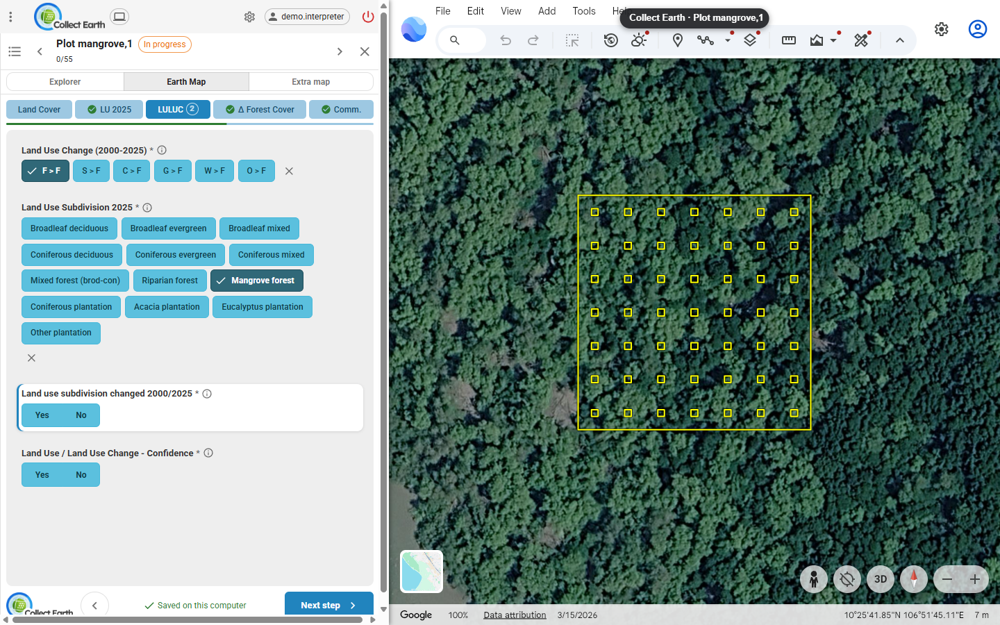
- Top bar: the three dots that open the menus (File, Data Import/Export, Tools, Settings, Utilities, Help), the project chip, the settings gear, your name, and the button that quits Collect Earth.
- Project chip: where the project keeps its data. A computer for a project on this computer; a cloud for a cloud project, which changes when plots are waiting to be sent, the computer is offline, some failed, or you need to sign in again (click it then). Point at it to read the details: the project, and in the cloud its server, your account and your role.
- Plot list: how many plots are done (12 of 120 completed), Search plot id, the filter (All, To do, Done) and Next unfinished plot. While a training set is open, it says so above them: Training plots: Learning – Day 1 (see Join a cloud project).
| Colour in the plot list | Status |
|---|---|
| Red | Not started |
| Yellow | In progress: saved, not submitted |
| Green | Completed: submitted |
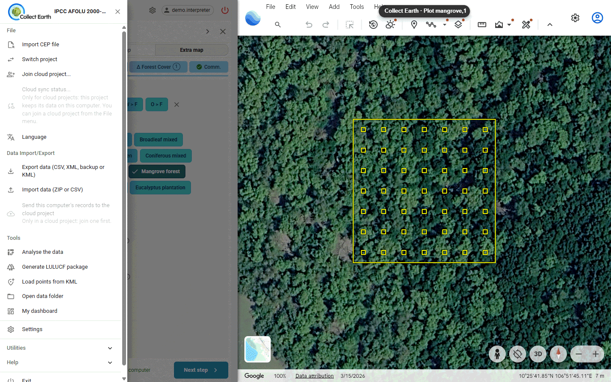
Keyboard shortcuts: / search a plot, N next unfinished plot, P same answers as the previous plot, Alt+1…9 imagery tabs. In the form: Ctrl+Enter (Cmd+Enter on a Mac) submits, Alt+←/→ changes step, ↑/↓ moves between questions, 1…9 picks an answer of a choice question, and Esc leaves the box you are typing in; a second Esc closes the form.
The introduction, the first time
Collect Earth 2 introduces its own screen, and asks for one click each time.
- Your screen at a glance. At the first start the panel dims and the controls of the plot list are numbered and explained all at once: the menu, where the project keeps its data, the settings, Quit, the search and the filter, Next unfinished plot and the list. Press Got it, click anywhere or press Esc. The first time you open a plot, its form gets the same: back to the list, the arrows, the plot's state, the other imagery, the steps, the saving and Next step.
- Tips. Later, one line appears beside a control the first time it matters: the project chip of a cloud project, To do, the keyboard shortcuts, the dashboard, plots to correct, training plots. They come one at a time. Any click or key in the panel closes a tip, and No more tips stops them.
- What changed from Collect Earth 1. If Collect Earth was already in use on the computer, one page comes first and says where each thing of the old program is now: the window, Google Earth Pro, the balloon, the other imagery, the colours of the list of placemarks, Saiku and working as a team.
Each of these shows once, and the computer remembers it. To see them again, open Help › Show me around or Help › What changed from Collect Earth 1. Help › Show tips switches the tips off or on; switched on again, they start over.
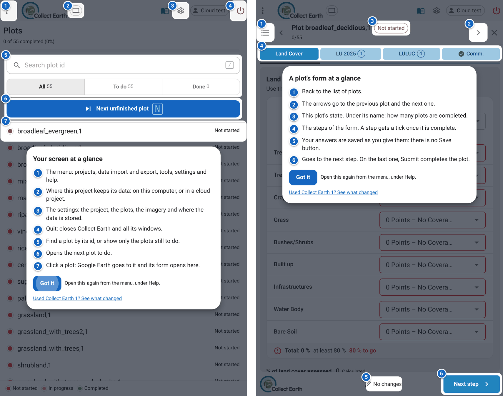
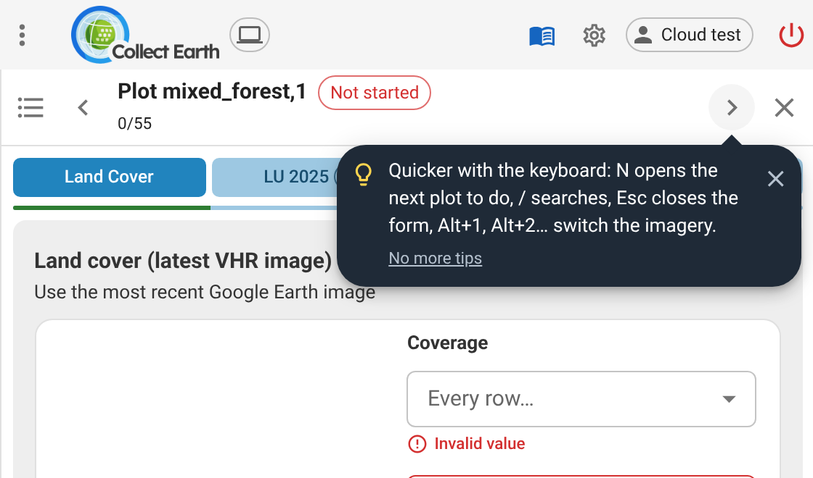
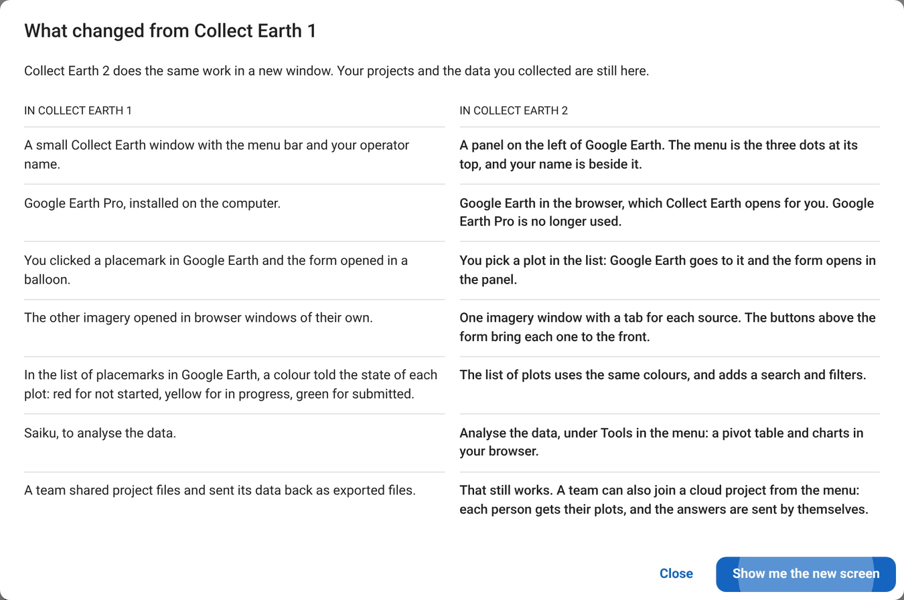
Assess a plot
- Click a plot in the list, or press Next unfinished plot. Its form opens, and Google Earth Web flies to it.
- Look at the imagery and answer the questions. Long surveys are split into steps; the form moves to the next step by itself.
- Every answer is saved at once, and the form says where: Saved on this computer. In a cloud project it then says Saved and sent to the cloud, or Saved on this computer · waiting to send while the plot waits for the connection.
- Press Submit when the plot is complete. If answers are missing, the form lists them with links. Once submitted, the plot turns green and the next unfinished plot opens.
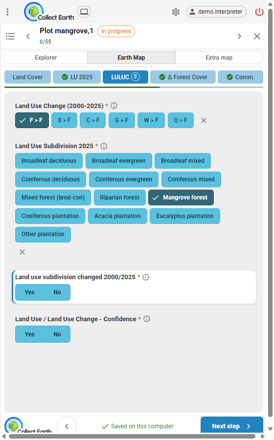
Many plots look alike? Same as previous plot (P) fills the empty choice and Yes/No answers of this step with those of the plot you submitted last. They are marked Copied until you look at them: check them, change what differs, and submit.
In a cloud project, a training plot shows how you did once you submit it: Training plot: 3 of 4 answers right, with the golden answer and the reason for each one you missed.
Changing a submitted plot un-submits it: it turns yellow until you press Resubmit.
Imagery
Google Earth Web is always there, around the panel. The buttons at the top of the panel show the plot in each other source of imagery switched on in Settings › Imagery: Collect Earth Explorer (Explorer, on by default), ESRI Wayback (older imagery) and Earth Map (switch them on there), Planet (with your key), and an extra map your project can set (with its address). They open in a second window, which fills your second screen if you have one; each button brings its source to the front. With no other source there are no buttons.
Collect Earth Explorer shows the plot on Sentinel-2 and Landsat imagery from Google Earth Engine, with charts of the plot over the years. A chart opens with its Trend; switch on the Change year, the Seasonal profile and the other analyses when you need them, and filter out cloudy observations. Your project can choose its layers and charts; in a cloud project the coordinator sets them on the dashboard. While you work on a plot, the Explorer already loads the next one, so it opens sooner. How to put Google Earth Web's historical imagery, Explorer and the other sources together to assess land use change: Reading land use change; the Explorer's layers, charts and analyses in detail: Collect Earth Explorer.
Planet needs your own key, in Settings › Imagery › Planet API key. Then choose under Planet imagery: Daily images, Planet's latest images of the plot day by day, or Monthly mosaics (Tropical Forest Observatory), one cloud-free picture a month, from the First mosaic to the Last mosaic you pick. In a cloud project the coordinator makes that choice; the key is always your own.
Join a cloud project
In a cloud project every plot you save is sent to the server by itself, and the coordinator follows the team's work on the web dashboard.
- Your coordinator sends you an invitation link. Copy it.
- In Collect Earth, choose File › Join cloud project..., paste the Invitation link and press Check the invitation.
- Check the project name and your role, and press Continue.
- Log in, or Register a new account (a password of at least 8 characters). If Collect Earth is already signed in to that server, for another project, it joins with that account; Use another account lets you log in as someone else.
- Collect Earth downloads the project with your plots, and restarts. The project chip in the top bar is now a cloud.
- The plot list holds every plot the coordinator gave you, from all their plot files, in one list. If you have none yet, it is empty until they give you some.
- Plots given to you later, or moved to someone else, come and go by themselves: Collect Earth asks for your plots every five minutes and says what changed. A plot you changed but have not sent yet stays until it is sent. Refresh now, in Settings › Project, asks at once.
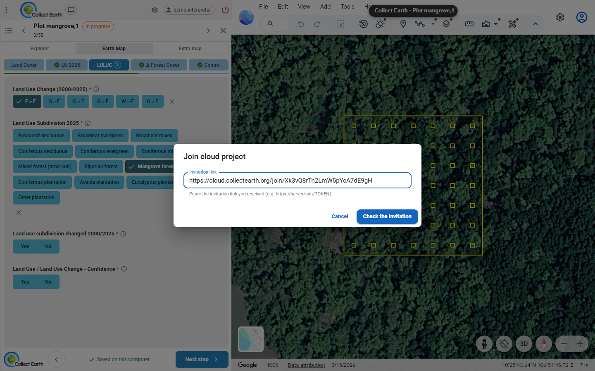
Then work as usual. Each plot is saved on your computer first and sent a few seconds later; the form says Saved and sent to the cloud once it is there. If the connection drops for a moment, the plots wait on your computer and are sent when it comes back. File › Cloud sync status... shows what is waiting, what failed and what was sent, with Sync now.
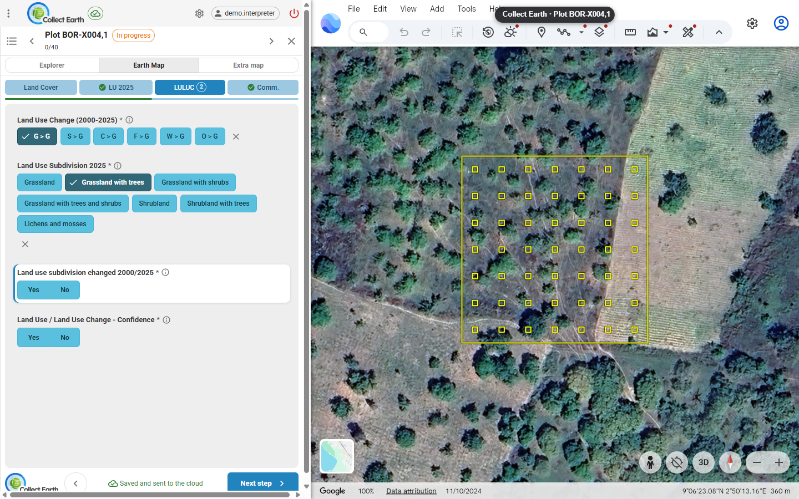
Working on two computers, say the office's and your laptop? Join with the same account on both. Every ten minutes each one brings the plots you saved on the other, and a newer save of a plot replaces the older copy, never while that plot has changes not sent yet.
In a cloud project your name is your account name, and the project chip's details name your role. Your own progress, quality figures and training feedback are on the dashboard's My work page (Tools › Open the cloud dashboard).
Training. At the start of a project the coordinator may train the whole team on the same plots. While you have no plots of your own yet, the training set opens by itself; otherwise Collect Earth offers it. Your answers to these plots are for the training only: when the coordinator finishes it, Collect Earth deletes them by itself and your own plots come back. To go back to them sooner, press Back to my plots in Settings › Project. The coordinator's side: Training.
You can belong to several cloud projects, on one server or several. File › Switch project lists them with your role in each; Load project opens one, downloading it the first time. The accounts you are signed in to are under Settings › Data storage, in Cloud accounts, each with Sign out.
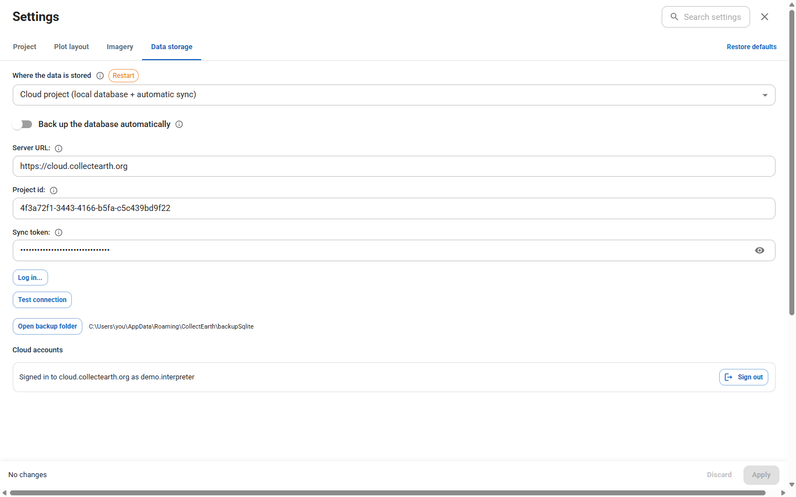
Settings
The gear in the top bar opens the settings, in four tabs. Change what you need, then press Apply. Settings marked Restart restart Collect Earth.
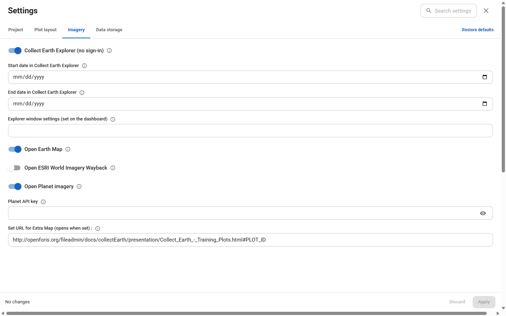
- Project: which browser Collect Earth uses (Choose Browser), the plot file (with a check of how many plots it holds, its first rows, and where they are on a map), the survey version when the survey has several, and the projects you loaded before. In a cloud project you don't choose the plot file: the tab shows how many plots you hold and when Collect Earth last asked for them, with Refresh now, and any training sets, with Back to my plots.
- Plot layout: the plot's shape (square, circle, hexagon, polygons from the plot file, NFI clusters…), the sampling points inside it and their size, with a preview.
- Imagery: the other sources of imagery (Collect Earth Explorer and its dates, Earth Map, ESRI Wayback, Planet and its key, an extra map).
- In a cloud project, the plot layout and the imagery windows are set by your coordinator, apart from your Planet key. They are read-only here. When the coordinator changes them, Collect Earth applies the change within a few minutes and tells you.
- Data storage: where the plots are saved. SQLite (one file on this computer, the default), PostgreSQL (a database several computers share on an office network), or Cloud project, with the cloud server, the project and its access token, filled in for you when you join. Below them, the cloud accounts you are signed in to, with Sign out.
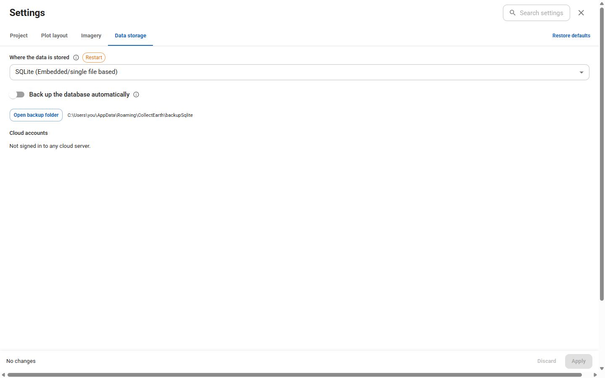
Export, import and backups
Data Import/Export › Export data (CSV, XML, backup or KML) saves your plots as:
| Format | Use it for |
|---|---|
| CSV (Excel) | A spreadsheet or R. Tick Include labels for code attributes for readable answers. |
| XML (compressed) | Moving plots to another Collect Earth, or into a cloud project |
| CSV for Collect | Opening the data in Open Foris Collect: every column, with the positions of the codes |
| KML | Seeing plots and answers in Google Earth |
You can export all records, only those changed since the last export, those changed since a date, or a filtered set.
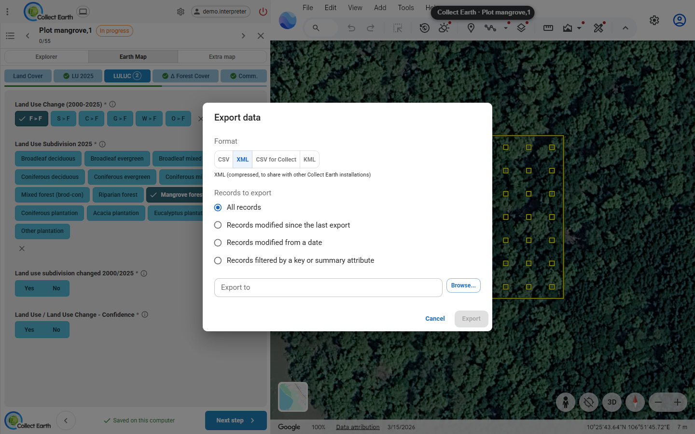
Import data (ZIP or CSV) brings in another Collect Earth's compressed XML export (it asks what to do with plots you already have), or changes to some answers from a CSV.
With SQLite, Collect Earth backs up its database each time it closes and keeps the last ten (Settings › Data storage › Open backup folder). Now and then, also export a compressed XML and keep it somewhere else.
Tools and utilities
- Tools › Analyse the data: tables and charts of your answers in the browser, also as a stand-alone file to share.
- Tools › My dashboard: progress, a map, the data, quality hints and activity for this computer's plots. In a cloud project it becomes Open the cloud dashboard, the project's page on the cloud server, where you sign in with your account.
- Tools › Generate LULUCF package: the data prepared for greenhouse gas reporting to the IPCC.
- Tools › Load points from KML: makes a plot file from points in a KML.
- Utilities › Find missing plots in database: compares a plot file with your database and lists plots not yet submitted.
- Utilities › Divide large CSV plot files: splits a plot file into several, at random or by the values of a column, to share out the work by hand.
In a cloud project the two utilities and Load points from KML are off: the coordinator gives each collector their share of the plots from the dashboard.
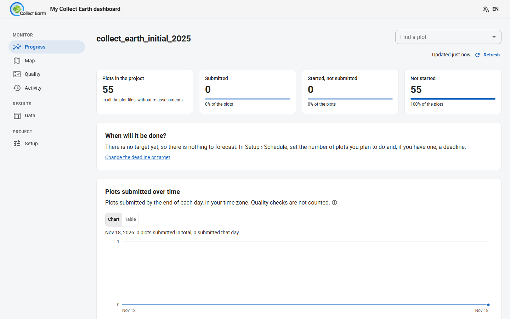
Common problems
| What you see | What to do |
|---|---|
| A plot is yellow, not green | It was changed after it was submitted. Open it and press Resubmit. |
| Cloud sync status shows plots waiting or failed | Nothing: they are sent again by themselves once the connection is back. Sync now tries at once. |
| The project chip turns red: Sign in again | Click it and log in again; nothing saved on your computer is lost, and the plots waiting are sent once you are back in. |
| No plots in the list, in a cloud project | Your coordinator hasn't given you plots yet. Once they do, the plots arrive by themselves within five minutes; Refresh now in Settings › Project asks at once. |
| The plot list says Training plots: … and your own plots are gone | A training set is open. Your plots come back when the coordinator finishes the training, or at once with Back to my plots in Settings › Project. |
| Collect Earth seems to stop after changing the project or a setting | It is restarting: wait, the small window shows each step until it opens again. |
Something else? Help › Technical Support opens the Open Foris support forum, and Help › Open Application Log File shows what Collect Earth did.